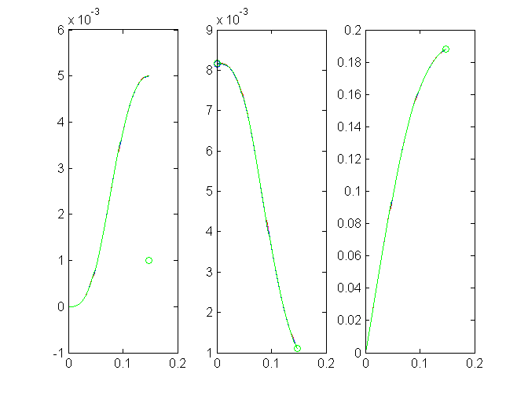

Contents
global g k kap
f = 1;
g = 6; k = 6; kap = .8; uHb = .001; vHb = uHb/ (1 - kap);
par = [g k vHb];
test on constraints on parameters
if kap < 0 || kap > 1 || g < 0 || ...
k < 0 || k > (1 - kap) * f^3/ uHb || ...
uHb + kap < 0 || ...
k^2 * uHb/ (1 - kap) - k * g - k + g > g^3 * (k - 1)/ k^2 * ...
(1 - 3/ g - exp(-3 * k/ g)) * 2/ 9
fprintf('parameters out of range \n');
return
end
first obtain lb for foetus case
might speed up get_lb and get_lb1 for k neq 1
lb_foetus = get_lb_foetus(par);
get lb via Newton Raphson on y(x_b) = y_b with Euler
'fast and dirty'
[lb, info] = get_lb(par,f,lb_foetus);
tb = get_tb(par,f,lb);
uE0 = get_ue0(par,f,lb);
uEb = f * lb^3/ g;
result = [info uE0 tb uEb lb]';
get lb via Newton Raphson on y(x_b) = y_b with ode solver
more acurate and slower than get_lb
[lb1, info1] = get_lb1(par,f,lb_foetus);
tb1 = get_tb(par,f,lb1);
uE01 = get_ue0(par,f,lb1);
uEb1 = f * lb1^3/ g;
result1 = [info1 uE01 tb1 uEb1 lb1]';
get lb, tb lb uE0 by shooting method on d/dx y
[lb2, info2] = get_lb2(par,f,lb_foetus);
tb2 = get_tb(par,f,lb2);
uE02 = get_ue0(par,f,lb2);
uEb2 = f * lb2^3/ g;
result2 = [info2 uE02 tb2 uEb2 lb2]';
get lb via shooting on d/d u_H tau u_E l
not recommended; just for checking
small domain of attraction; slow
[tul_b, uE03, info3] = get_tul(par,f,lb_foetus);
tb3 = tul_b(1); uEb3 = tul_b(2); lb3 = tul_b(3);
result3 = [info3 uE03 tb3 uEb3 lb3]';
compare results for uE0 tB uHb uEb lb
txt = [{'info'}; {'uE0'}; {'tB'}; {'uEb'}; {'lb'}];
differences are mainly due to differences in lb
fprintf(' get_lb get_lb1 get_lb2 get_tul \n');
print_txt_var(txt, [result result1 result2 result3])
get_lb get_lb1 get_lb2 get_tul
info 1.000000 1.000000 1.000000 1.000000
uE0 0.008171 0.008163 0.008155 0.008167
tB 0.147049 0.147002 0.146955 0.146890
uEb 0.001109 0.001108 0.001107 0.001107
lb 0.188068 0.188007 0.187948 0.188072
prepare plotting
t = linspace(0,tb,100)';
t1 = linspace(0,tb1,100)';
t2 = linspace(0,tb2,100)';
t3 = linspace(0,tb3,100)';
l0 = 1e-6;
vH0 = uE0 * l0^2 * (g + l0)/ (uE0 + l0^3)/ k;
hul_0 = [vH0; uE0; l0];
[t, hul_t] = ode23s('dhul', t, hul_0);
vH = hul_t(:,1); uE = hul_t(:,2); l = hul_t(:,3);
vH01 = uE01 * l0^2 * (g + l0)/ (uE01 + l0^3)/ k;
hul1_0 = [vH01; uE01; l0];
[t1, hul1_t] = ode23s('dhul', t1, hul1_0);
vH1 = hul1_t(:,1); uE1 = hul1_t(:,2); l1 = hul1_t(:,3);
vH02 = uE02 * l0^2 * (g + l0)/ (uE02 + l0^3)/ k;
hul2_0 = [vH02; uE02; l0];
[t2, hul2_t] = ode23s('dhul', t2, hul2_0);
vH2 = hul2_t(:,1); uE2 = hul2_t(:,2); l2 = hul2_t(:,3);
vH03 = uE03 * l0^2 * (g + l0)/ (uE03 + l0^3)/ k;
hul3_0 = [vH03; uE03; l0];
[t3, hul3_t] = ode23s('dhul', t3, hul3_0);
vH3 = hul3_t(:,1); uE3 = hul3_t(:,2); l3 = hul3_t(:,3);
the better the curves uH(tau_b) matches uH_b,
the more accurate the estimation of l_b has been
subplot(1,3,1)
xlabel('tau')
ylabel('v_H')
plot(t, vH, 'r', tb, uHb, 'or', ...
t1, vH1, 'm', tb1, uHb, 'om' , ...
t2, vH2, 'b', tb2, uHb, 'ob', ...
t3, vH3, 'g', tb3, uHb, 'og')
subplot(1,3,2)
xlabel('tau')
ylabel('u_E')
plot(t, uE, 'r', 0, uE0, 'or', tb, uEb, 'or', ...
t1, uE1, 'm', 0, uE01, 'om', tb1, uEb1, 'om', ...
t2, uE2, 'b', 0, uE02, 'ob', tb2, uEb2, 'ob', ...
t3, uE3, 'g', 0, uE03, 'og', tb3, uEb3, 'og')
subplot(1,3,3)
xlabel('tau')
ylabel('l')
plot(t,l,'r', tb, lb, 'or', ...
t1, l1, 'm', tb1, lb1, 'om', ...
t2, l2, 'b', tb2, lb2, 'ob', ...
t3, l3, 'g', tb3, lb3, 'og')
